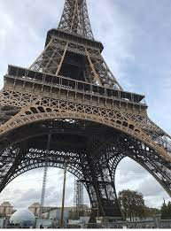

Menara Eiffel sebelumnya bernama Menara Paris (bahasa Prancis: Tour Eiffel, /tuʀ ɛfɛl/) merupakan sebuah menara besi yang dibangun di Champ de Mars di tepi Sungai Seine, Paris. Menara ini telah menjadi ikon utama negara Prancis dan salah satu struktur paling terkenal di dunia.
Dinamai sesuai nama perancangnya, Gustave Eiffel, Menara Eiffel adalah bangunan tertinggi di Paris dan salah satu struktur terkenal di dunia.[1] Lebih dari 200.000.000 orang telah mengunjungi menara ini sejak pembangunannya tahun 1889,[2] termasuk 6.719.200 orang tahun 2006,[3] menjadikannya monumen berbayar yang paling banyak dikunjungi di dunia.[4][5] Termasuk antena setinggi 24 m (79 kaki), struktur ini memiliki tinggi 325 m (1.063 kaki) sejak 2000, yang sama dengan bangunan konvensional bertingkat 81.
Ketika menara selesai dibangun tahun 1889, struktur ini menjadi yang tertinggi di dunia — gelar yang dipertahankan hingga 1930 ketika Chrysler Building di New York City (319 m — 1.047 kaki) selesai.[6] Menara ini sekarang yang tertingggi kelima di Prancis dan paling tinggi di Paris, dengan struktur tertinggi kedua Tour Montparnasse (210 m — 689 kaki), meskipun akan dikalahkan oleh Tour AXA (225.11 m — 738.36 kaki).
Struktur besi Menara Eiffel berbobot 7.300 ton sementara keseluruhan struktur termasuk komponen non-besi berbobot 10.000 ton. Tergantung temperatur, puncak menara dapat menjauhi matahari 18 cm (7 inci) karena pemuaian besi pada bagian yang menghadap matahari. Menara ini juga berayun 6–7 cm (2-3 inci) dalam suasana berangin.[3] Sebagai demonstrasi terhadap ekonomisnya bangunan, bila 7300 ton struktur besi dicairkan, maka akan memenuhi 125 meter persegi dengan kedalaman 6 cm (2.36 inci), yang berarti kepadatan besi 7.8 ton per meter kubik. Menara ini memiliki massa yang kurang dari massa udara di dalam silinder dengan dimensi yang sama,[7] setinggi 324 meter dan 88.3 jari-jarinya. Berat menara 10.100 ton bila dibandingkan dengan 10.265 ton udara.